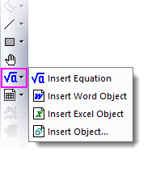
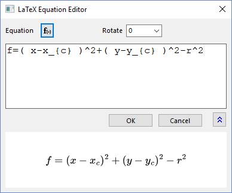
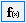
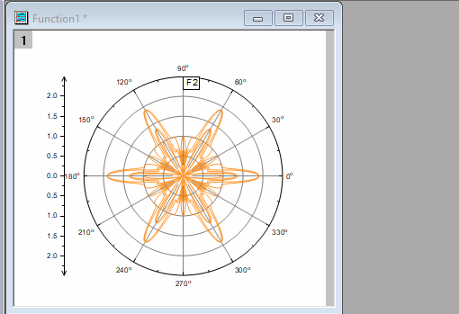
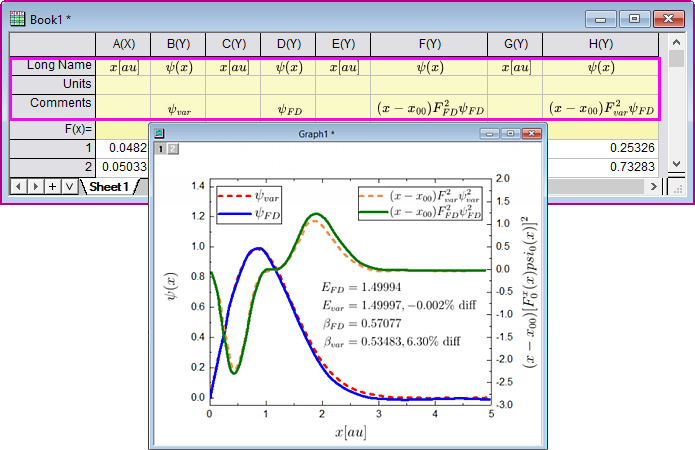
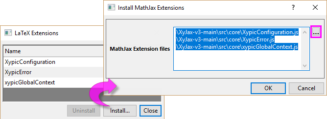

OLE-Objekte in Diagrammen (und Layouts) einfügen
Graph-InsertOLE-Obj
-
- 
Gleichung einfügen
Seit Origin 2023b enthält Origin ein SVG-basiertes LaTeX-Gleichungstool. Dieses neue Hilfsmittel LaTeX-Gleichung einfügen erfordert kein manuelles Installieren von zusätzlichen Bibliotheken oder Softwares durch die Anwender. Es benötigt nur die Bibliothek MathJax JS, die mit Origin ausgeliefert wird (Dateien unter <Origin-Programmverzeichnis>\JS\MathJax\). Das alte Hilfsmittel Gleichung einfügen braucht dagegen den installierten Gleichungseditor von Mathtype oder Microsoft und für die App LaTeX muss auch MiKTex installiert sein.
- Bei aktivem Diagrammfenster (oder Layoutfenster):
- (a) Klicken Sie auf die Schaltfläche Gleichung einfügen auf der Symbolleiste Hilfsmittel oder
- (b) Wählen Sie im Menü Einfügen: LaTeX-Gleichung oder
- (c) Klicken Sie mit der rechten Maustaste in die Diagrammseite und wählen Sie LaTeX-Gleichung einfügen im Kontextmenü oder
- (d) Fügen Sie im Fall einer Mischung von Text und LaTeX-Gleichung ein Textobjekt zum Diagramm hinzu. Klicken Sie doppelt, um den direkten Bearbeitungsmodus zu aktivieren. Klicken Sie mit der rechten Maustaste und wählen Sie Einfügen: LaTeX-Gleichung im Kontextmenü.
Der LaTeX-Gleichungseditor wird geöffnet. Hier können Sie die LaTeX-Gleichung im oberen Bearbeitungsfeld eingeben. Im unteren Bedienfeld wird eine Vorschau der Gleichung gerendert.

Tipps:
- Sie können auf die Schaltfläche F(x)  klicken, um eine Liste von Origins Anpassungsfunktionen (inkl. Ihrer benutzerdefinierten Funktionen) zu öffnen. Wählen Sie eine Funktion und bearbeiten Sie sie im oberen Feld.
- Um das Gleichungsobjekt zu drehen, können Sie (a) einen Gradwinkel im LaTeX-Gleichungseditor auswählen oder eingeben oder (b) zweimal auf das Gleichungsobjekt klicken (kein Doppelklick), um den Drehmodus zu aktivieren, und dann an einem der vier Anker zu ziehen.
- Sie können immer doppelt auf das LaTeX-Objekt klicken, um den LaTeX-Gleicungseditor zum Modifizieren/Bearbeiten erneut zu öffnen.
- Wenn Sie Klartext (LaTeX Markup) kopieren, klicken Sie mit der rechten Maustaste auf eine leere Fläche innerhalb des Diagrammfensters und wählen Sie LaTeX einfügen. Der Text wird in ein Textobjekt eingefügt, das als LaTeX-Objekt gerendert wird.
- 
- Sie können auch LaTeX-Gleichungen auch in Achsentiteln, Legenden oder jedem anderen Textobjekt einfügen:
-
- Klicken Sie doppelt auf das Textobjekt, um in den direkten Bearbeitungsmodus zu gelangen.
- Klicken Sie mit der rechten Maustaste und wählen Sie Einfügen: LaTeX-Gleichung im Kontextmenü aus oder drücken Sie Strg + L, um den LaTeX-Gleichungseditor zu öffnen.
Hinweis: Die LaTeX-Gleichung, die in eine Spaltenbeschriftungszeile des Arbeitsblatts eingefügt wurde (z. B. Langname, Einheiten und Kommentar) wird in Achsentitel und Legende automatisch gerendert.
- 
- MathJax unterstützt viele Erweiterungen von Drittanbietern. Um diese Erweiterungsdateien zu installieren, wählen Sie Hilfsmittel: Latex-Erweiterungen. Einzelheiten finden Sie im nächsten Abschnitt.
 |
Wenn Sie MathType verwenden möchten, um eine Gleichung einzufügen,
- verwenden Sie bitte die Schaltfläche Objekt einfügen . Weitere Einzelheiten finden Sie im Abschnitt unten. Oder
- Sie können die Systemvariablen @MKX = 1 und @IEE = -1 setzen, um das alte Verhalten wiederherzustellen.
|
|
Lernen Sie mehr Methoden zum Einfügen von Gleichungen in Origin kennen und lesen Sie dazu diese FAQ.
|
LaTeX-Erweiterungen

- Um die Erweiterung eines Drittanbieters zu installieren:
- Wählen Sie Hilfsmittel: LaTeX-Erweiterungen, um den Dialog zu öffnen.
- Klicken Sie auf die Schaltfläche Installieren. Der Dialog MathJax-Erweiterungen installieren wird geöffnet. Klicken Sie auf die Schaltfläche ... rechts vom Feld MathJax-Erweiterungsdateien. Wählen Sie im aufgerufenen Browser für mehrere Dateien die gewünschte Erweiterungsdatei .js aus und klicken Sie auf OK, um sie zu den MathJax-Erweiterungsdateien hinzuzufügen.
- Klicken Sie auf OK, um zum Dialog LaTeX-Erweiterungen zurückzukehren.
- Klicken Sie auf die Schaltfläche Schließen.
- Testen Sie jetzt Ihre LaTeX-Gleichung im LaTeX-Gleichungseditor.
- Um die Erweiterung eines Drittanbieters zu deinstallieren:
- Wählen Sie eine Erweiterung, die Sie aus der obigen Liste entfernen möchten und klicken Sie auf die Schaltfläche Deinstallieren.
|
Eventuell gibt es komplexe Syntaxen/Symbole, die nicht von MathJax-Erweiterungen unterstützt werden, z. B. einige chemische Abbildungen, die von der MiKTex-Erweiterung chemfig unterstützt werden. In diesen Fällen testen Sie bitte
ODER
|
Anderes OLE-Objekt einfügen
Hinweis: Um diese Schaltflächen auf der Symbolleiste Hilfsmittel zu verwenden, müssen die entsprechenden Applikationen (z. B. MS Word) auf Ihrem Computer installiert sein.